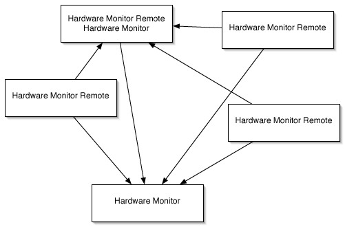

Ferne Computer überwachen |
Hardwaremonitor und Temperaturemonitor können auch entfernt stehende Computer überwachen. Das heißt es ist möglich, eine beliebige Zahl von anderen Computern über ein Netzwerk hinweg zu kontaktieren um auch auf deren Sensoren zuzugreifen. Die Messwerte werden zusätzlich zu den Werten der lokalen Sensoren angezeigt.
Das einzige was Sie hierzu benötigen, sind zusätzliche Exemplare des Programms Hardwaremonitor Remote, die auf jedem Computer installiert werden müssen, der überwacht werden soll. Sie brauchen außerdem einen Registrierungsschlüssel ("Nutzungserlaubnis") für jeden Computer der gleichzeitig überwacht werden soll. Sie können sich mit einer unbegrenzten Anzahl von Computern gleichzeitig verbinden und diese von einem einzigen Arbeitsplatz aus überwachen. (In der Praxis kann die tatsächliche Anzahl durch der Geschwindigkeit Ihres Netzes begrenzt sein.) Natürlich können Sie auch mehrere Überwachungsstationen verwenden, um die Daten von einer beliebigen Anzahl anderer Computer zu empfangen.
Im folgenden Beispiel läuft Hardwaremonitor Remote auf 4 Computern, während 2 mit Hardwaremonitor ausgestattet sind. Beachten Sie, dass ein System beide Programme zur gleichen Zeit laufen lässt. Die Pfeile geben an, in welche Richtung die Sensormesswerte übertragen werden.

Im Beispiel oben werden 5 Registrierungscodes (nicht 6) benötigt (unter der Annahme, dass alle 5 Computer zur gleichen Zeit in Betrieb sind).
Es gibt keine kostenlose Version des Fernüberwachungshilfsprogramms (kein "Temperaturmonitor Remote"). Sie können jedoch Temperaturmonitor verwenden, um sich mit einem System mit Hardwaremonitor Remote zu verbinden. In diesem Fall ist das Programm auf dem lokal überwachten Computer darauf beschränkt, Temperatursensoren anzuzeigen, kann jedoch alle Sensoren auf dem fernüberwachten Computer darstellen.
Um die Verbindung zu einem fernen Computer herzustellen, auf dem ein registriertes Exemplar von Hardwaremonitor Remote läuft, verwenden Sie die folgende Anleitung:
Hardwaremonitor wird versuchen, den ausgewählten Ferncomputer zu kontaktieren. Wenn er nicht erreicht werden konnte, erhalten Sie nach ein paar Sekunden eine Fehlermeldung. Überprüfen Sie in diesem Fall Ihre Netzkonfiguration. Computer, die bereits in Verbindung stehen, werden in der Computerliste mit einem blauen Symbol angezeigt.
Falls der ferne Computer von diesem Computer aus noch nie kontaktiert wurde, werden automatisch neue Benutzereinstellungen für die fernen Sensoren angelegt. Sie sollten das Einstellungsfenster öffnen um zu prüfen, ob alle Vorgaben wie gewünscht eingestellt sind.
Zusätzliche Hinweise können Sie außerdem dem Handbuch von Hardwaremonitor Remote entnehmen.
Sie können Gruppen von Computern in Ihrem Netz definieren, die über einen einzigen Mausklick verbunden werden sollen. Dies ist nützlich, wenn Sie zum Beispiel verschiedene Klassenräume überwachen. Verwenden Sie diese Funktion über die Auswahl des Klappmenüs Liste verbinden in der unteren rechten Ecke des Verbindungsfensters. Sie können eine unbegrenzte Zahl von Computergruppen definieren, die in einem Schritt über die Auswahl des entsprechenden Punktes im Menü verbunden werden können.
Um solche Computerlisten zu definieren, wählen Sie den Punkt Computerlisten ändern …. Ein herausgleitendes Konfigurationsfenster erscheint. Drücken Sie den Knopf + unter der unteren Tabelle, um eine neue Computergruppe hinzuzufügen. Der neue Eintrag wird in dem hierarchischen Überblick Computerlisten / Mitglieder angezeigt. Nachdem eine Liste in diesem Überblick ausgewählt wurde, fügt ein erneutes Betätigen des Knopfes + ein neues Mitglied in die Liste ein. Sie könnn die Listennamen, Computernamen und Port-Nummern wie gewünscht verändern. Beachten Sie, dass Sie DNS-Namen oder IPv4-Adressen verwenden müssen, um einen Computer anzugeben. Sie können nicht die Bezeichnungen verwenden, die innerhalb von Mac OS X "Gerätenamen" genannt werden. Einträge oder ganze Listen können über den Knopf - entfernt werden. Der Knopf Gewählte Computer zu gewählter Liste hinzufügen kann dazu verwendet werden, um sich automatisch auf einen oder mehrere Computer zu beziehen, die Hardwaremonitor Remote betreiben und gerade in Ihrem Netzwerk online sind. Wählen Sie eine Liste im unteren Überblick und einen oder mehrere Computer in der oberen Tabelle, um dies zu nutzen.
Sie können eine Liste aller Computer anzeigen, die sich im Moment in einer aktiven Verbindung mit dem aktuellen Computer befinden. Diese Liste kann außerdem dazu benutzt werden, eine Verbindung aufzuheben.
Wählen Sie den Menüpunkt Fenster > Fernverbindungen einblenden aus oder betätigen Sie die Tastenkombination ⌘+⌥+K. Das Fenster Verbundene Computer wird angezeigt. Es enthält die Computernamen, Modelltypen, Seriennummern, IP-Adressen, DNS-Namen und die Anzahl der vorgefundenen Sensoren.
Um die Verbindung mit einem Computer zu trennen, wählen Sie ihn in der Tabelle aus und betätigen die Schaltfläche Trennen. Beachten Sie, dass die Verbindung mit Ihrem eigenen Computer nicht getrennt werden kann.
Wenn ein ferner Computer in den Ruhezustand geht, werden alle seine Sensoren abgeschaltet, so dass es nicht mehr möglich ist, Messwerte oder andere Daten von ihm zu empfangen. Das Programm behandelt diesen Fall automatisch und wird die Verbindung zum Ferncomputer lösen. Der überwachende Computer zeigt eine Warnmeldung an, wenn dies geschieht. Falls Sie in dieser Situation nicht informiert werden möchten, können Sie die Warnmeldung im Abschnitt Allgemein des Einstellungsfensters ausschalten.
Falls Ihr eigener Computer in den Ruhezustand geht, ist die Lage etwas anders: Der aktuelle Computer kann keine Messwerte mehr empfangen, aber die fernen Computer sammeln immer noch Daten. In diesem Fall wird das lokale Programm automatisch versuchen, sich wieder mit allen fernüberwachten Computern zu verbinden, sobald es wieder aufwacht.
Es vergehen einige Sekunden bis alle fernüberwachten Computer wieder verbunden sind. Mac OS X braucht einige Zeit um alle Netzwerkfunktionen wieder zu reaktivieren wenn es aus dem Ruhezustand erwacht.
Das Programm macht keine Unterscheidung zwischen lokalen und fernen Sensoren. Öffnen Sie einfach das Einstellungsfenster und passen Sie die Sensoreinstellungen an, wie es weiter oben bereits erläutert wurde. Die vierte Spalte in den Sensortabellen zeigt den Namen des Computers an, zu dem jeder Sensor gehört.
Vorgabewerte für ferne Sensoren bleiben immer noch gespeichert, auch wenn Sie die Verbindung zu dem Computer, der diese Sensoren beherbergt, trennen. Das Programm wird sich automatisch an die Einstellungen erinnern, wenn Sie später die Verbindung wieder herstellen. Zur Zeit getrennte Fernsensoren verschwinden einfach aus den Ausgabekanälen und erscheinen später wieder.
Einige Statusfenster öffnen automatisch ein neues Exemplar des Fensters für jeden Computer, der momentan verbunden ist. Dies bezieht sich auf die folgenden Anzeigen:
Wenn Sie zurzeit zum Beispiel 5 Computer zusätzlich zum lokalen Computer überwachen und den Menüpunkt Fenster > Übersicht einblenden auswählen, wird das Programm insgesamt 6 Exemplare des Sensorübersichtsfensters öffnen, eins für jeden Computer.